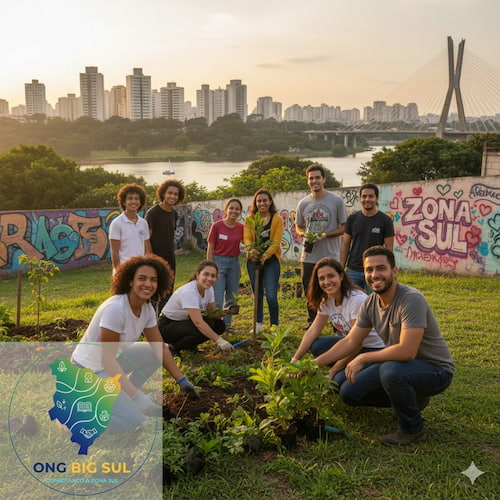

Fortalecendo a Solidariedade na Zona Sul de São Paulo
A Ong Big Sul é uma plataforma dedicada a dar visibilidade e conectar pessoas a organizações não governamentais que transformam realidades na vasta e diversa Zona Sul de São Paulo. Nossa missão é ser a ponte entre quem quer ajudar e quem precisa de ajuda.
Nosso Propósito
Mapeamos, cadastramos e divulgamos o trabalho incrível de ONGs que atuam em áreas como educação, meio ambiente, cultura, esporte e assistência social. Acreditamos que, ao fortalecer essas organizações, fortalecemos toda a comunidade.